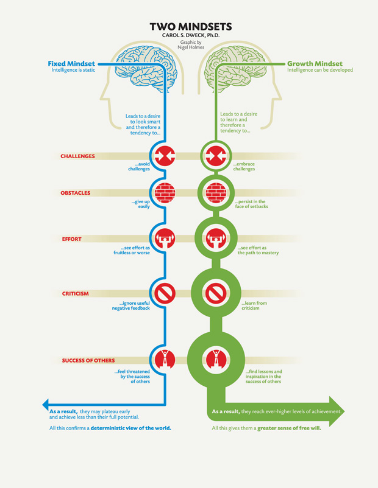

Neuroplasticity
Neuroplasticity is the brains ability to grow, learn and strengthen neural pathways in the brain. Neuroplasticity is able to change your brain by adjusting how your brains neurons work, neurons are cells in your Central Nervous System and brain which transmit data between our senses, brain and muscles, amongst others. Neurons connect to lots of other neurons through root like structures where, Transmission occurs electronically (using ions) between the different neurons. Learning something or trying something new causes these neurons to fire between themselves, doing it once doesn’t really change anything, but the more the neurons fire amongst themselves the stronger the link gets. New pathways are able to form the more reinforced the action becomes, the more an action occurs the less electrical energy (know as action potential) is needed to continue the signal along neurons. “Neurons that fire together, wire together”. Neurons adapt so that the necessary signals it needs to receive from other neurons don’t have to be as strong, basically meaning they get more efficient.
Neuroplasticity has a lot of important ramifications, not only are brains plastic during childhood but also into adulthood, albeit at a lesser degree. This means that you are always capable of growth, always capable of learning something new and forming new memories, if you incur some neural or brain damage, your brain is able to adapt and form new pathways to help circumvent or even overcome lasting impairment.
Brain-derived neurotrophic factor (BDNF) is a protein that plays an important part in neuron protection and in neuron growth, not only neuron genesis but also growth in strengthening existing neurons. Luckily there are ways to increase our neuroplasticity and our BDNF production. If you want to get stronger, lift heavy things, if you want to remember things better, always be learning, an easy way to naturally elevate BDNF levels. Getting enough sunlight, enough sleep and exercising are all easy ways to increase BDNF levels, while things like Stress, high levels of sugar and even social isolation all have negative impacts on BDNF levels. Meditation and mindfulness are both key ways in reducing stress.
Using the knowledge of Neuroplasticity also works well in tandem with the idea of a growth mindset.
Growth Mindset
Growth mindset is a duology with fixed mindset, both of which are personal beliefs around the ideas of intelligence and abilities, which have far reaching ramifications around how the individual lives their life. Fixed mindset is the idea that intelligence and skill are predetermined at birth, it often leads to behaviours where an individual may give up easily, thinking if they can’t just do it they will never be able to do it, they may often avoid challenges. They dislike criticism which often leads them to put in a lot of effort to look smart or save face. While growth mindset takes the opposite approach, they seek challenges as a way to learn and grow, they believe intelligence and ability are able to be developed through hard work and tenacity.
I know I have often tried to avoid mistakes in an effort to save face, from fear of embarrassment and ridicule from others. I will be humbler and more accepting of myself, and put myself and my mistakes out there in a nurturing, growth environment.

https://fs.blog/2015/03/carol-dweck-mindset/